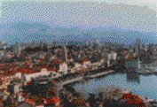

Thursday, February the 26th, 2004
back to: title, date or indexes

This is, indeed, Split, shown here as a taster for a forthcoming Hooting Yard series in which Matilda Spamclot will be writing about her bicycle journey from Split in Croatia to Splat in Cornwall. Says Matilda : “My previous trip was from the Finnish town of Hell to Hull, and Split to Splat seemed equally enticing! Gosh, I had so many adventures on the way! The incident with the postman, the cormorant and the lid of a bleach bottle doesn't tell you the half of it! Look out for this exciting new series, posted exclusively to Hooting Yard! Yes, I know, I know, I am overfond of exclamation marks! I'm a proper caution!”